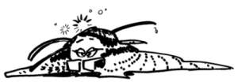

This page has usage examples for the following words:
a mole, moles ほくろ
a suntan, sunburn 日焼け ひやけ
dermatology 皮膚科 ひふか
dermatologist 皮膚科医 ひふかい
freckles そばかす
lines, wrinkles しわ
melanin メラニン色素 メラニンしきそ
pimples, acne ニキビ、吹き出物 ニキビ、ふきでもの
skin cancer 皮膚癌 ひふガン
skin trouble 皮膚のトラブル ひふのトラブル
spots しみ
sunscreen 日焼け止め ひやけどめ
I've noticed spots on my face.
顔に、しみが出てきました。
かおに、しみがでてきました。
I've noticed freckles on my face.
顔中に、そばかすが出てきました。
かおじゅうに、そばかすがでてきました。
My high school daughter is worried about pimples on her forehead.
高校生の娘のおでこに、吹き出物／にきびが出て、悩んでいるようです。
こうこうせいのむすめのおでこに、ふきでもの／にきびがでて、なやんでいるようです。
I've just noticed a mole on my chin that I've never seen before.
あごに、これまでになかったほくろが出てきているのに気づきました。
あごに、これまでになかったほくろがでてきているのに きづきました。
Should I be worried about it?
これは心配なことでしょうか。
これはしんぱいなことでしょうか。
Is it getting bigger, or is there no change in size?
徐々に大きくなっていますか？ それとも同じ大きさですか？
じょじょにおおきくなっていますか？ それともおなじおおきさですか？
I've noticed a lot of small bumps around my eyes.
目のまわりに、白い米粒のようなものが、たくさんでてきました。
めのまわりに、しろいこめつぶのようなものが、たくさんでてきました。
They aren't itchy or painful but I'm concerned.
痛くも痒くもないのですが、気になります。
いたくもかゆくもないのですが、きになります。

A conversation between a patient and a doctor about melanin
Patient:
We spent the past few days mostly indoors, because, in addition to bad weather, there was a lot of work to do. But, as the pleasant wind starts blowing, we return to outdoor activities, and we notice that there are brownish spots on the face. Skin troubles from the sun are big worries to girls and women. A friend of mine has small rashes around the eyes and on the neck. Are they caused by the sun? As the sunlight is getting stronger day by day, our worries are increasing.
天候の不順と仕事の多忙を理由に屋内にいることの多い毎日でしたが、心地よい風に誘われるようにして、又、戸外での運動を始めるようになりました。しかし、強い日差しによって、知らず知らずのうちに、顔に薄茶色のしみが出てきました。私たち女性にとっては、日光による肌のトラブルが気がかりです。友人は、目のまわりや、首のまわりに小さな米粒のようなものが出てきて悩んでいます。やはり、日光のせいでしょうか。これから、ますます日差しが強くなるので心配です。
Doctor:
When we are exposed to the sunlight, cells in the skin (melanocytes) produce a pigment called melanin. This phenomenon explains suntan or sunburn, and freckles are formed where there is a localized concentration of melanin in the skin. The amount of pigment produced varies by race and hereditary. Melanin exists not only in the skin but also in hair and other parts of the body. While melanin is seen as a villain to beauty-conscious people, it is in fact an important member of the defense system against invading pathogens、encapsulating and killing them. Melanin functions as a natural sun-screen in the skin and is also known to be essential for synthesis of vitamin D. Therefore, people with higher skin melanin content need longer hours of sun exposure than people with lower melanin content. People with higher skin melanin content who live in high latitude areas away from the equator are known to suffer from rickets. In regard to your friend with skin trouble, it is best to see a dermatologist.
太陽光線に当たると、皮膚の細胞（メラノサイトmelanocyte）がメラニンという色素を産出します。これが、いわゆる日焼けで、しみは局所的にメラニン色素が集まった部分に出来ます。メラニン色素の産出量は、人種、或いは、遺伝により異なります。メラニン色素は、皮膚だけでなく、毛髪や身体の他の部分にも存在します。メラニン色素は美容の見地からすると女性の敵扱いをされていますが、実はメラミン色素は身体の防御機構の重要な一員なのです。細菌を始めとする病原体が身体に侵入すると、まずメラニン色素が病原体を取り囲んで（メラニン化という）殺してしまいます。又、メラニン色素は太陽光線に対して、自然のサンスクリーンの働きをします。太陽光線はビタミンＤの生成に不可欠であることが知られていますが、それ故、メラニン色素の多い人は少ない人に比べて、太陽光線に当たる時間長くする必要があります。また、メラニン色素が多くかつ赤道から離れた高緯度に住んでいる人はビタミンＤ欠乏症（くる病）になりやすいことがしられています。ご質問の皮膚のトラブルについては、やはり、皮膚科を受診されることをおすすめします。
My two cents 一言おせっかい
After you learn about the relationship between melanin and vitamin D, the use of sunscreen poses a problem; should I use a sunscreen or not? We use a sunscreen in order to avoid deleterious effects of the sun. On the other hand, sunlight is essential for vitamin D synthesis and subsequent calcium absorption. At present, the recommendation is to use sunscreen as well as take vitamin D supplements.
メラニン色素をビタミンＤの関係を知ると、サンスクリーンを使用することの是非が問題になります。サンスクリーンの使用目的は、太陽光線の有害な作用を避けるためです。一方、太陽光線はビタミンＤ生成，ひいてはカルシウムの吸収に必要です。現時点では、サンスクリーンを使用すると同時にビタミンＤの補給も怠らないでおくということでしょう。
[me01]
| © 1995-2013 NACOS International Institute. All Rights Reserved. |